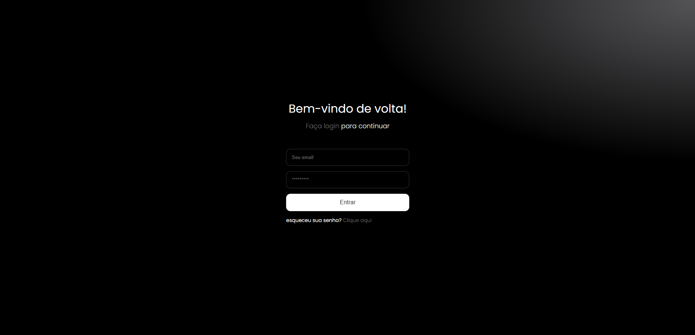
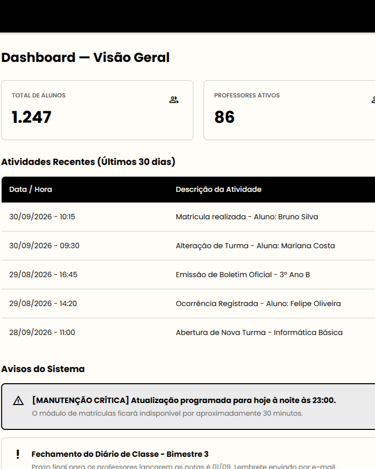
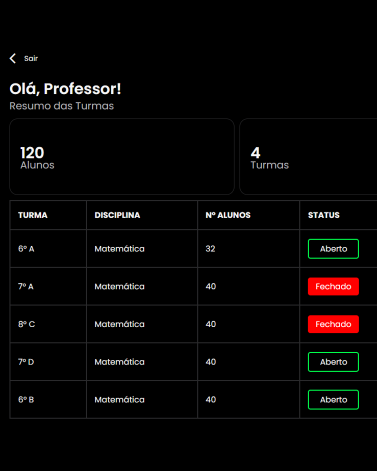
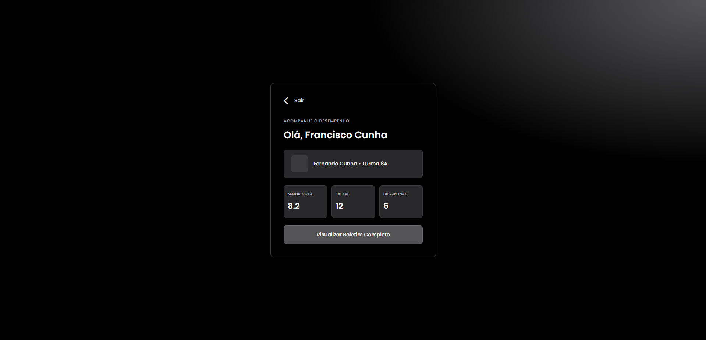

Gestão Acadêmica Integrada
Controle completo de turmas, matrículas, notas e frequências em tempo real.
Automatize processos pedagógicos, financeiros e administrativos em um único sistema intuitivo e de alta performance.
Começar AgoraO EduConnect é uma plataforma de gestão escolar criada para centralizar e automatizar rotinas acadêmicas e administrativas. Um ambiente digital seguro e intuitivo que conecta de forma eficiente a direção, os professores, os alunos e os responsáveis.
Controle completo de turmas, matrículas, notas e frequências em tempo real.
Mais agilidade para professores lançarem notas e gerenciarem o desempenho dos alunos.
Portal exclusivo para responsáveis acompanharem o boletim, faltas e avisos escolares de forma transparente.
Simples, modular e integrado para otimizar toda a rotina escolar de ponta a ponta.

Faça login com seu perfil específico (aluno, professor, responsável ou admin) com total segurança e criptografia.

A secretaria e coordenação organizam turmas, disciplinas e alocam professores rapidamente.

Professores lançam notas e frequências de forma ágil com cálculo automático de médias.

Alunos e responsáveis acompanham boletins, faltas e avisos em tempo real pelo portal.
Conectando escolas, professores, alunos e famílias em uma única plataforma de gestão escolar.
Instituições utilizando o EduConnect.
Municípios alcançados pela plataforma.
Alunos, professores e responsáveis.